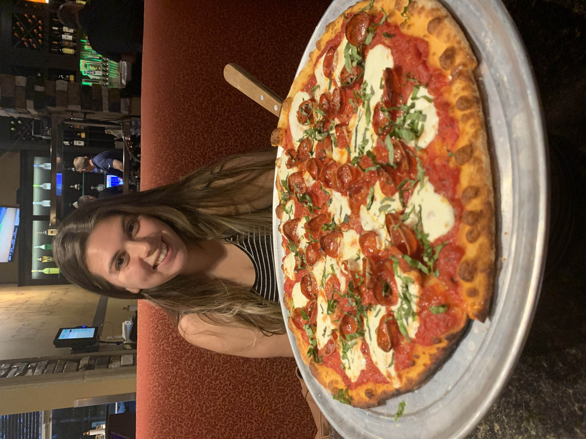
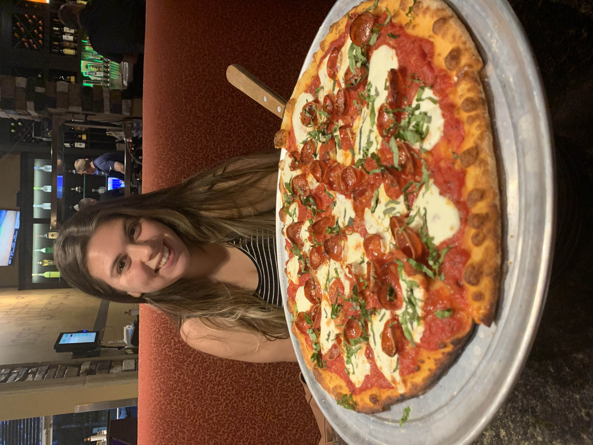

A Dreaming Equestrian
A little bit about Jordan
Jordan is a seasoned ranch hand at Walt Disney World Resort. Her favorite food is pizza! Her role model is her godmother, who is incredible! She has two amazing dogs who she can't be without and the day she is looking forward to her wedding day (with me, her fiance).
 

Jordan has always had a love for horses. She didn't know she would be working with them until she started at the Tri-Circle D Ranch. Taking on a ranch hand role wasn't always her dream job. She grew up wanting to be an interior designer. She comes from a family who loves DIY projects on the weekends. Jordan developed a love for decorating her home. Whenever she assisted her family, she took great joy in transforming their home. When Jordan said, "growing up, being an interior designer was my dream job," curiosity compelled me to seek where it all started. I was invested, so of course, I interviewed her.
Jordan grew up in a small country town in Massachusetts. She had a great life and endless support. Her dad loved sports so naturally, Jordan and her siblings played competitively at the highest level. Volleyball and softball were her main sports and she was talented. Although she was a great volleyball and softball player, Jordan had a higher calling. She is a better equestrian. Her love for horses developed at a young age when she told her mother she wanted to learn how to ride. From there, her mom found a place for Jordan to learn. This would spark a 15-year journey to her dream job. Like volleyball and softball, Jordan participated in equestrian games competitively.
Here is Jordan's detailed explanation of horse show classes.
"When I actively showed horses, I would show in the equation and pleasure classes. I also would do hunter paces and gymkhana. Equation is based on how your posture and balance look.
Pleasure is more focused on the horses and how pleasurable they look to ride. Hunter paces are fast paced trail rides through the woods and based on a timely record of how fast you and your horse can pace.
Gymkhana was my favorite because it is a class that consists of fun games. These games consist of barrel racing, pole bending, egg and spoon race, and mint julep classes." - Jordan